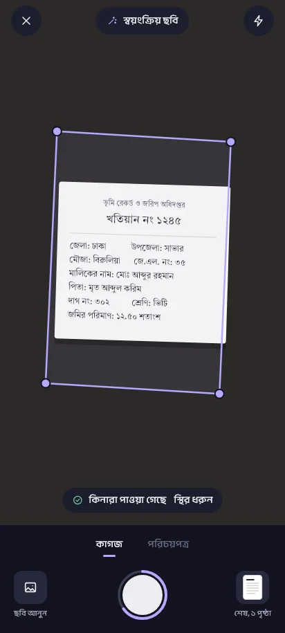
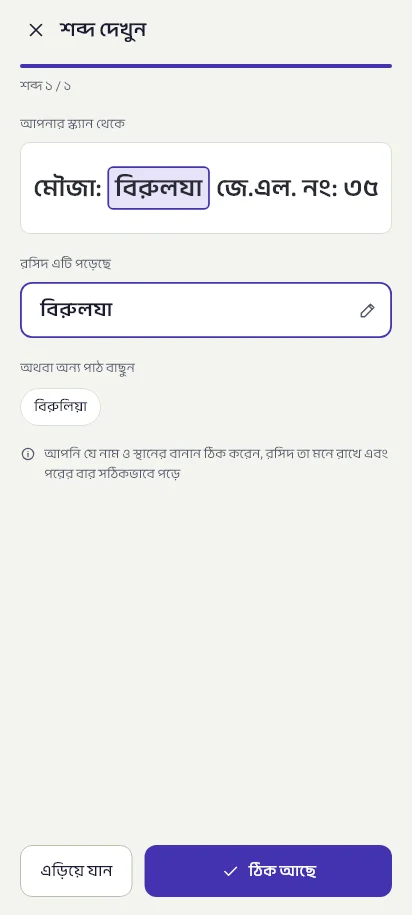
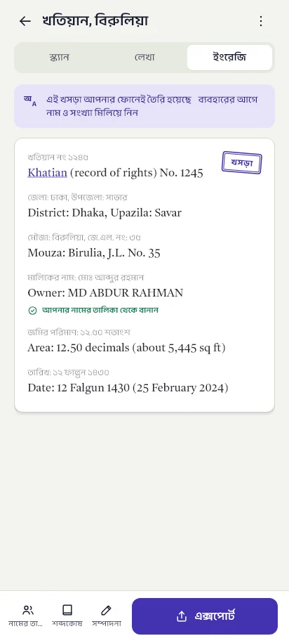
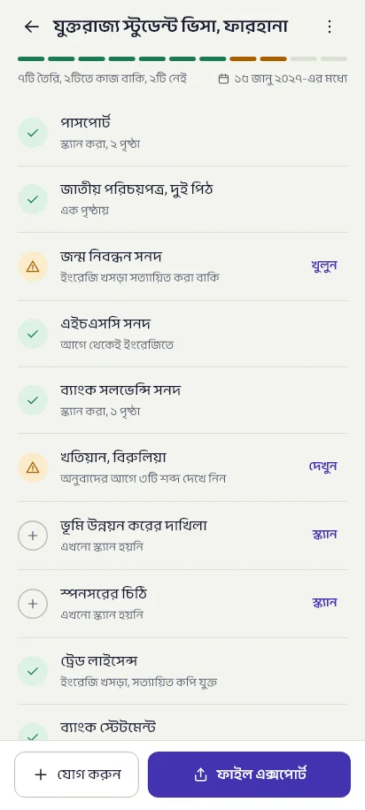
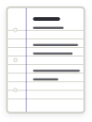

১
স্ক্যান করুন
ক্যামেরা নিজেই কাগজের কিনারা খুঁজে ছবি তোলে।
রসিদ একটি ফ্রি অ্যান্ড্রয়েড অ্যাপ। ইন্টারনেট ছাড়াই চলে, আপনার কাগজ ফোনের বাইরে যায় না।
পুরোনো ৩২-বিট ফোন? অন্য ফাইলটি নিন।
সংস্করণ ২.০.০, অ্যান্ড্রয়েড ৮ বা নতুন
ভূমি রেকর্ড ও জরিপ অধিদপ্তর
খতিয়ান নং ১২৪৫
Directorate of Land Records and Surveys
Khatian No. 1245

ক্যামেরা নিজেই কাগজের কিনারা খুঁজে ছবি তোলে।

যে শব্দে রসিদের সন্দেহ, সেগুলো ছবির সঙ্গে মিলিয়ে ঠিক করুন।

নামের বানান পাসপোর্টের মতো থাকে। জমির মাপ ও বাংলা তারিখ বদলে যায়।

চেকলিস্ট ধরে কাগজ জমান, তারপর এক পিডিএফে এক্সপোর্ট করুন।
পুরোনো দলিল, নতুন সনদ, দোকানের রসিদ। কাগজে থাকলে, বাংলা বা ইংরেজিতে হলে, রসিদ সেটি রাখতে, পড়তে আর খুঁজে দিতে পারে।



দূতাবাস ও অফিস সাধারণত অনুবাদক বা নোটারির সই করা অনুবাদ চায়। রসিদ তাঁদের জন্য একটি পরিষ্কার খসড়া আর সই করার পাতা তৈরি করে দেয়।
ছাপা বাংলা ভালো পড়া যায়। হাতের লেখায় যেখানে সন্দেহ, রসিদ সেটি দাগিয়ে দেয়, আপনি ছবির সঙ্গে মিলিয়ে ঠিক করে নেন।
রসিদের ইন্টারনেট ব্যবহারের অনুমতিই নেই। তাই চাইলেও কোনো কাগজ আপলোড করতে পারে না।
নিজে দেখে নিন: অ্যান্ড্রয়েড সেটিংস, অ্যাপস, রসিদ, পারমিশন।
এই পাতার ডাউনলোড বোতামে চাপ দিন।
অ্যান্ড্রয়েড একবারই জিজ্ঞেস করে, ব্রাউজার অ্যাপ ইনস্টল করতে পারবে কি না।
ভাষা বেছে নিন, তারপর প্রথম কাগজটি স্ক্যান করুন।
সংস্করণ ১ ইনস্টল করা থাকলে আগে সেটি আনইনস্টল করুন। এই সংস্করণের সই আলাদা।
রসিদ অনলাইনে যায় না, তাই নিজে আপডেট হয় না। নতুন সংস্করণ এই পাতাতেই পাবেন।